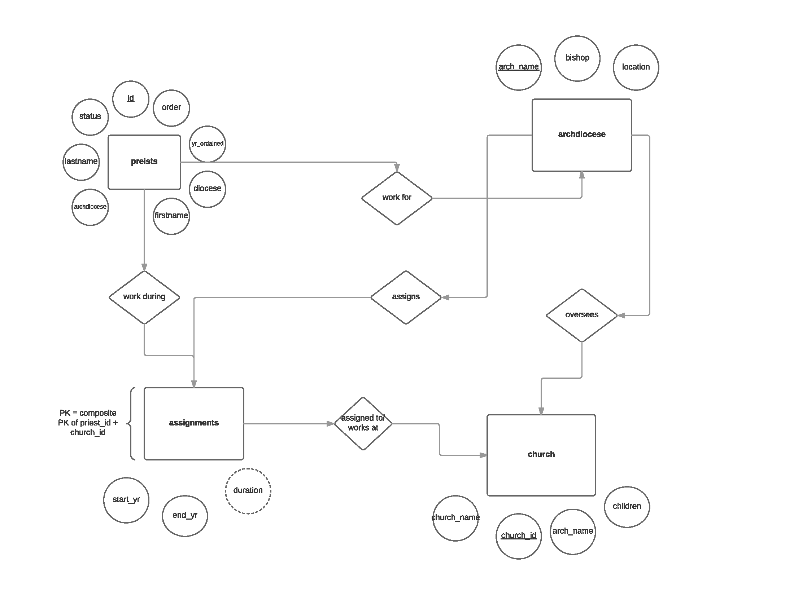

This project was completed as part of a geographic databases course. Our instructions, in short, were to design and develop a geographic database for an interesting topic that can support various queries.
I chose to focus on credibly accused priests in the Catholic Church for three reasons. First, I was looking for a comprehensive geographic database with this information and couldn't find one. Second, pastoral abuse receives significant media coverge, so I knew this would be relevant. And third, the bill for the settlements the Catholic Church has been paying victims is footed by parishoners. The people paying hundreds of millions of dollars should know what they pay hundreds of millions of dollars for.
This project needed a database rather than flat files for a multitude of reasons, but primarily because the data are constantly changing. There are trials for accused priests going on as I write this and there will continue to be accusations, investigations, and trials for the foreseeable future. The ability to easily update data makes having a database much more useful than flat files.
Data for this project was difficult to find. The majority of the data are from Bishop Accountability, a non-profit out of Massachusettes, while the remaining data were compiled from press releases, Archdiocese official documents (2006, 2014), court proceedings, and news stories (Tribune, SunTimes, various local and national papers).
Below is the original ER diagram I used in the database design. Some minor changes were made to the final diagram in order to reduce redundancy and adjust for data constraints. The data were set up in .csv files before the database was constructed in pgAdmin.

I successfully constructed and populated the geographic database and began exploring the information through simple visualizations and queries.
One of the visualizations I created is the interactive map shown in the Project Description section. The map allows users to saerch for credibly accused preists by their last name or the school/church they worked at. Users can also click on the points to view additional information.
Though the queries themselves were simple, the information they returned was valuable. Some of the queries included looking at how many students were enrolled at the Catholic schools where these preists worked, the combined number of years these men worked in the preisthood, and any official acknowledgments of abuse made by the Church.